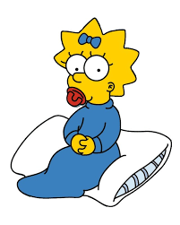

Maggie Simpson
Margaret Abigail Simpson[cita requerida] es un personaje ficticio de la serie de televisión de dibujos animados Los Simpson. Es la tercera hija del matrimonio protagonista, Homer y Marge Simpson, y la más joven de ellos. Sus hermanos mayores son Bart y Lisa Simpson. Siempre se la ve succionando un chupete y cuando camina, suele tropezar con el mono y cae de frente. Maggie fue creada por el dibujante Matt Groening en el vestíbulo de la oficina de James L. Brooks, para debutar en televisión el 19 de abril de 1987, en el corto Good Night para el programa El show de Tracey Ullman.1 En la versión original, Nancy Cartwright y Yeardley Smith suelen hacer todas las risas, gemidos y balbuceos que normalmente emite el personaje, así como algunas de sus palabras.23 Sin embargo, la primera vez que habló, fue la actriz Elizabeth Taylor quien le prestó su voz para una sola palabra: papi .45 De manera excepcional, en los capítulos especiales de Halloween, James Earl Jones y Harry Shearer le han hecho hablar con voz masculina con propósitos cómicos.67Otra oportunidad en la que maggie habla es en el episodio titulado: Homerica, donde dice la palabra si en idioma noruego:Ja,Ja,Ja. Maggie ha aparecido en otros productos relacionados con Los Simpson, entre los que se incluyen videojuegos, la película, la atracción del parque Universal Studios Hollywood, anuncios, libros y cómics. También ha inspirado toda una línea de productos licenciados, entre los que destacan figuritas, camisetas y libros infantiles. En 2000, Maggie, junto al resto de su familia, fue galardonada con una estrella en el paseo de la fama de Hollywood